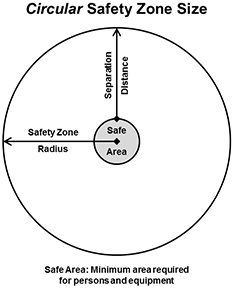
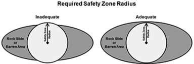

|
|
Safety Zone Radius (for Circle) |
Safety zone radius is the radius of a circular safety zone just large enough to protect the specified number of personnel and heavy equipment from radiant burn injury. Calculation is based on safety zone separation distance plus the radius of a circle that fits all personnel and equipment. This core area represents the only safe area of the safety zone; outside the Safe Area persons may receive burns resulting from radiant heat. Convective heat is not accounted for in the current safety zone model.
|
I/O |
Module |
If |
Notes |
|
Input |
None |
|
|
|
Output |
SAFETY |
|
|
The safety zone size model is based on flame height. However, flame height cannot be predicted with current fire behavior models. Therefore, flame length is used in place of flame height in the SAFETY module, providing a worst-case estimate of size.
The area of a circle is the smallest area that provides the required separation distance. A non-circular safety zone that provides the required protection on all sides will have a greater area than calculated here.
|  |
Existing or natural safety zones (such as rockslides, barren areas, and some recently burned areas) are rarely circular or square. To be effective, a circle of the specified radius must fit within the existing safety zone. See the illustration (below, left) for an example of an existing safety zone (such as a rockslide) that is not wide enough for the conditions specified. The safety zone on the right is adequate.
|  |